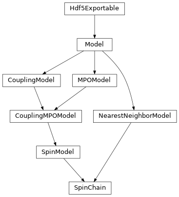

spins¶
full name: tenpy.models.spins
parent module:
tenpy.modelstype: module
Classes

|
The |
|
Spin-S sites coupled by nearest neighbour interactions. |
Module description
Nearest-neighbour spin-S models.
Uniform lattice of spin-S sites, coupled by nearest-neighbour interactions.